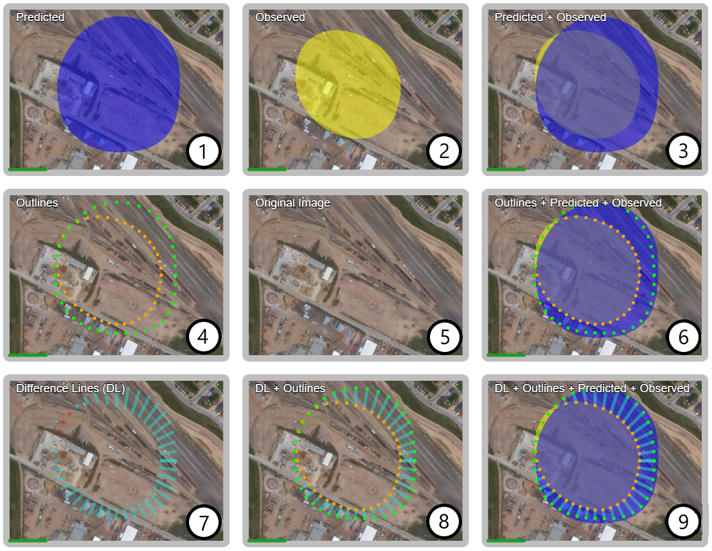

For the final task, imagine that you are a microbiologist working for Environment Canada. You have been researching the effectiveness of hydrocarbon-eating bacteria in cleaning up oil spills, and now that you’ve tested these bacteria, you need to see how well they did against the predicted models.
To the left you will see nine side-by-side displays that you can use to compare the effectiveness of the bacteria. Each display is running on a constant loop. A video progress bar is drawn under each display to indicate the position in the video. Press spacebar to pause/play. Use the left and right arrow keys to rewind/fast-forward.
 Displays are labeled. But for convenience, they will be described as displays 1 through 9 as in the figure above. The middle image (display 5) is the original area of effect.Display 1 represents the predicted simulation of the effectiveness of the hydrocarbon-eating bacteria. The blue blob represents the predicted scope of the oil spill over time. Display 2 represents the observational data collected during an actual oil spill. The yellow blob represents the true scope of the spill being reduced over time by the bacteria.
Using these two videos to compare:
Display 3 combines both the predicted and the observed oil spill data into a single video.
Using this video to compare:
Display 4 introduces another representation of the oil spill over time. Dotted outlines are placed around the perimeter of the predicted and observed data to replace the blobs. Display 6 combines the outline representation with the spill blobs.
Using these two videos to compare:
Finally, display 7 introduces a representation of the difference between the predicted and observed oil spill data called difference lines (DL). You will notice that the line colours change as the video plays. The lines are coloured blue where the predicted blob is larger, and they are coloured red where the observed blob is larger.
Display 8 combines this technique with perimeter outlines, and display 9 combines all techniques (i.e., observed & predicted blobs, perimeter outlines, and difference lines) into one video.
Using these three videos to compare: